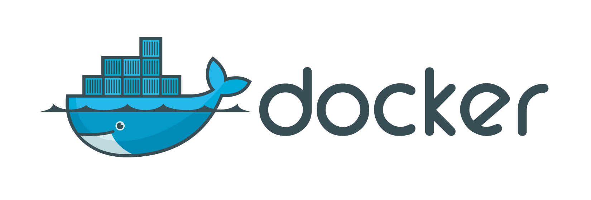
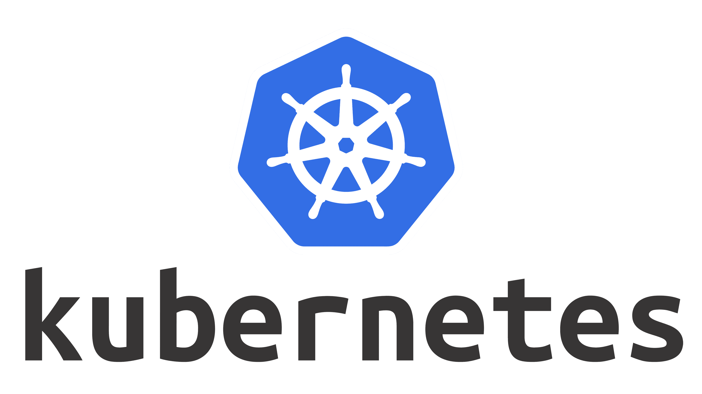
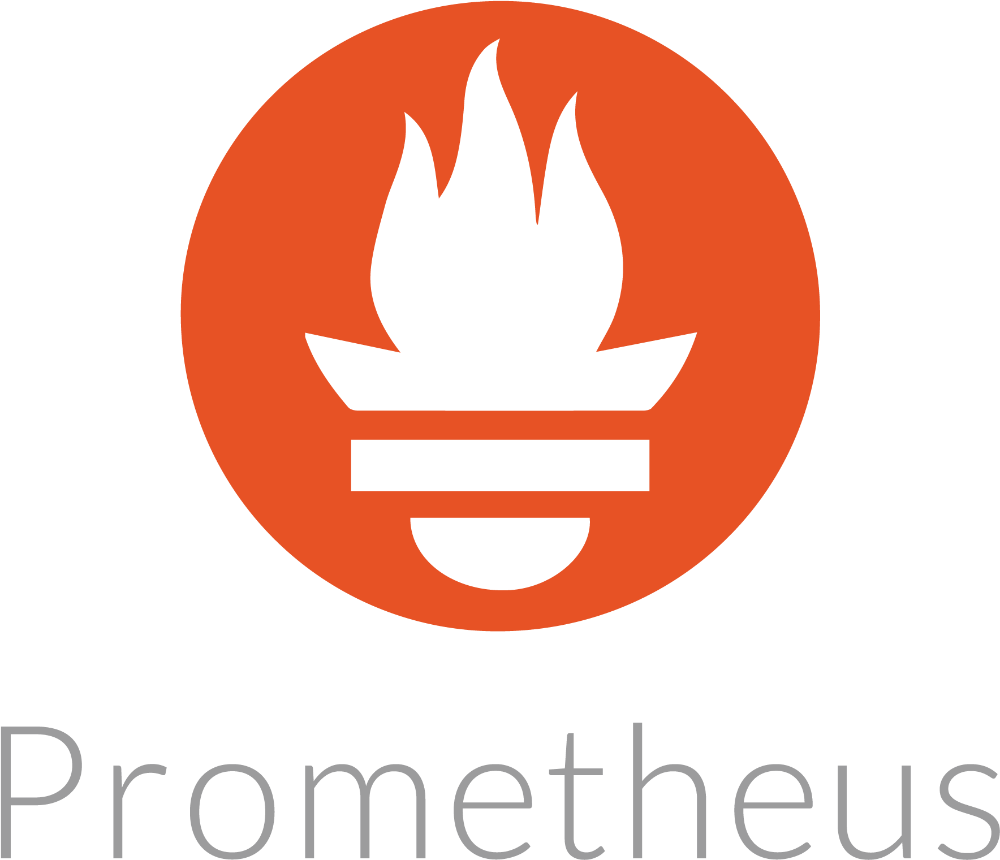

Pratik Yadav
AWS / DevOps Engineer | Cloud • CI/CD • Automation • Kubernetes



📧 pratikyadav_devops_@outlook.com | 📞 +91 7558583940 | Pune, India
⬇ Download ResumeAWS / DevOps Engineer | Cloud • CI/CD • Automation • Kubernetes



📧 pratikyadav_devops_@outlook.com | 📞 +91 7558583940 | Pune, India
⬇ Download ResumeI am an AWS DevOps Engineer with hands-on experience in building CI/CD pipelines, containerized applications, infrastructure automation, and cloud monitoring. I enjoy solving operational challenges, improving deployment efficiency, and building reliable, scalable systems.
AWS, Azure
Docker, Kubernetes, Jenkins, Git, Ansible, Terraform, Helm, Maven
Prometheus, Grafana, AWS CloudWatch
Bash, Shell Script, Python, YAML, Linux, Windows
June 2024 – September 2024 (Remote)
CI/CD automation, Docker, Kubernetes, Terraform, Ansible, AWS
Flask, MySQL, Docker, Kubernetes, Helm, AWS
Lambda, API Gateway, DynamoDB, S3